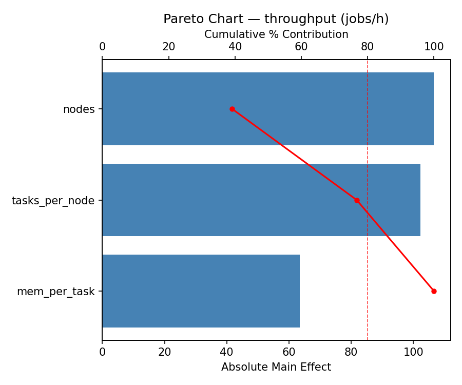
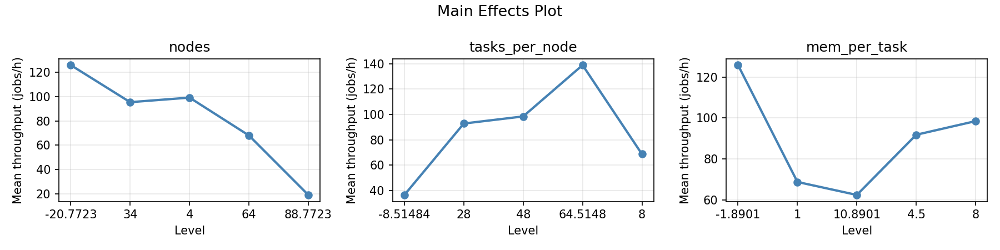
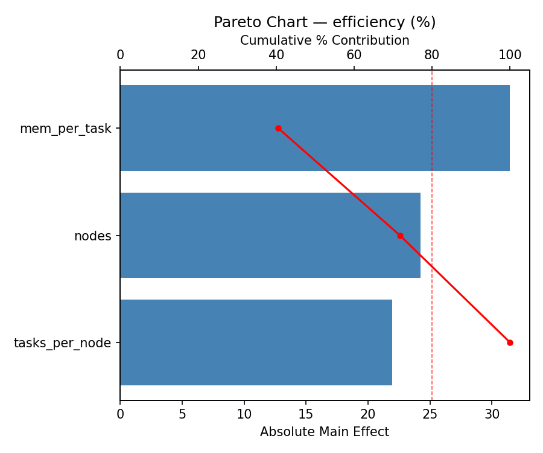
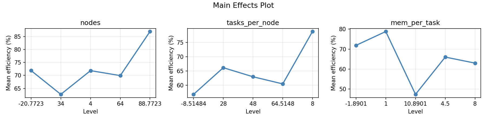
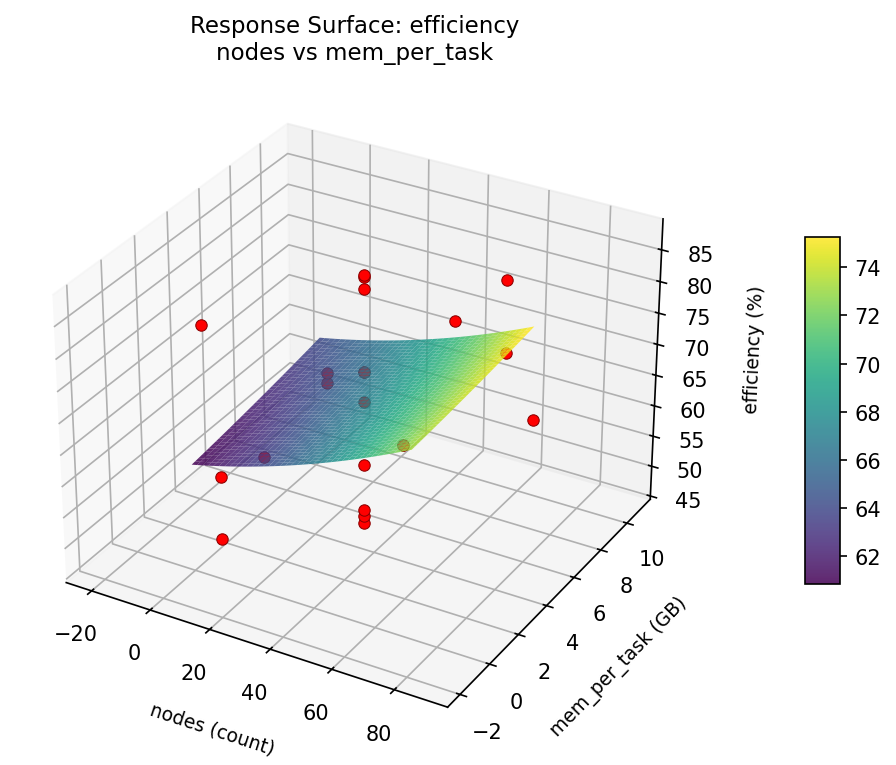
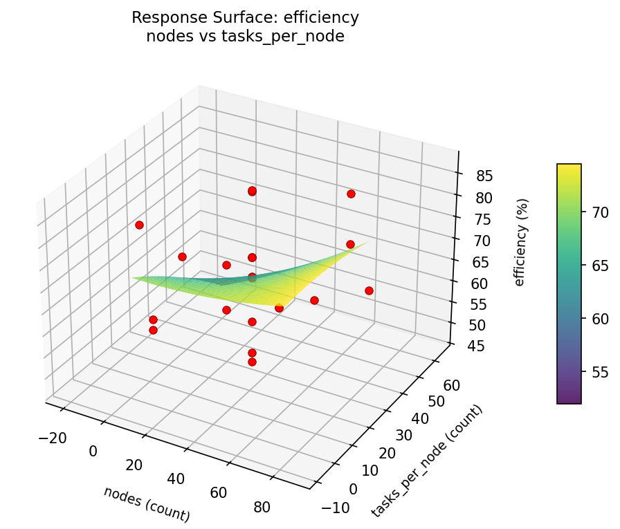
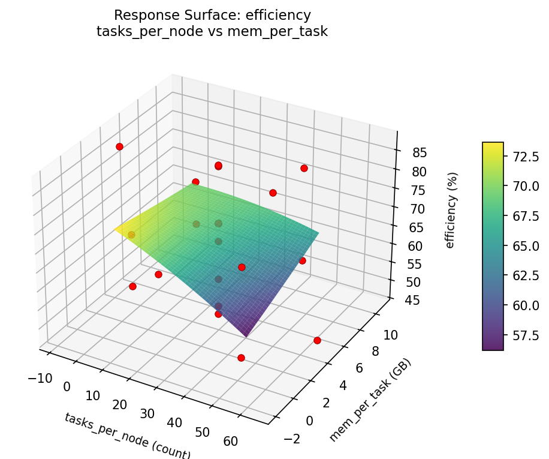
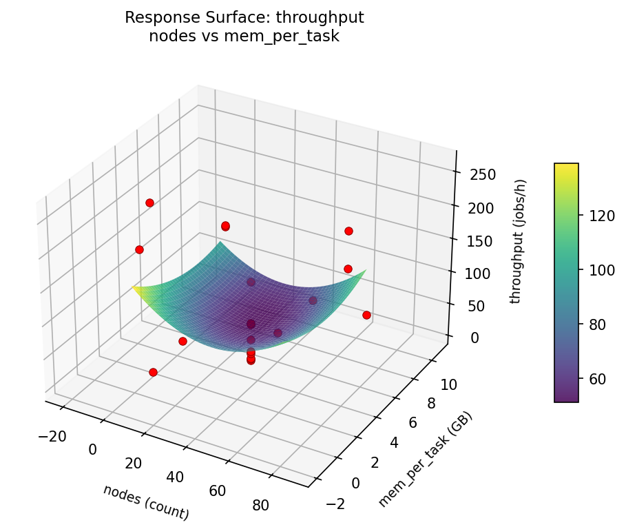
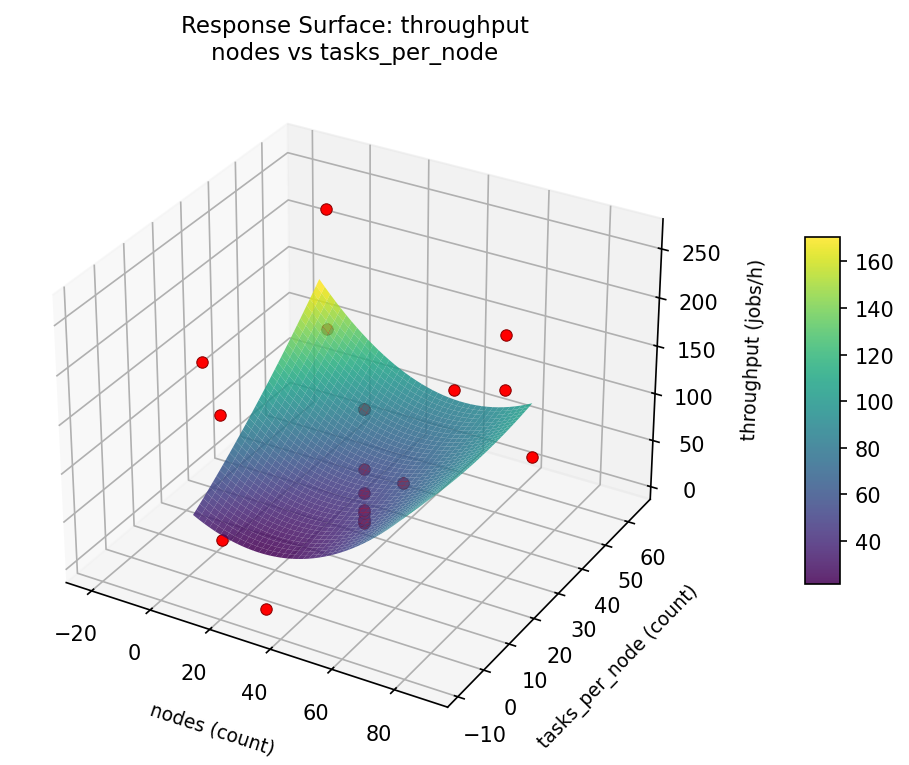
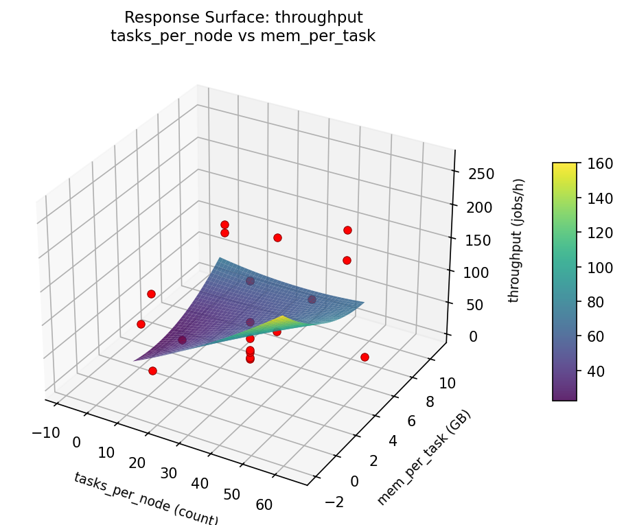

Find the optimal node count, tasks-per-node, and memory allocation for Slurm job throughput.
| Factor | Levels | Type | Unit |
|---|---|---|---|
nodes | 4, 64 | continuous | count |
tasks_per_node | 8, 48 | continuous | count |
mem_per_task | 1, 8 | continuous | GB |
Fixed: none
| Response | Direction | Unit |
|---|---|---|
throughput | ↑ maximize | jobs/h |
efficiency | ↑ maximize | % |
The Central Composite Design produces 22 runs. Each row is one experiment with specific factor settings.
| Run | nodes | tasks_per_node | mem_per_task |
|---|---|---|---|
| 1 | 34 | 28 | 4.5 |
| 2 | 64 | 8 | 8 |
| 3 | 4 | 48 | 1 |
| 4 | 34 | 64.5148 | 4.5 |
| 5 | 34 | 28 | 4.5 |
| 6 | -20.7723 | 28 | 4.5 |
| 7 | 34 | 28 | -1.8901 |
| 8 | 34 | 28 | 4.5 |
| 9 | 64 | 48 | 1 |
| 10 | 88.7723 | 28 | 4.5 |
| 11 | 34 | 28 | 4.5 |
| 12 | 34 | -8.51484 | 4.5 |
| 13 | 34 | 28 | 4.5 |
| 14 | 4 | 8 | 8 |
| 15 | 34 | 28 | 4.5 |
| 16 | 64 | 8 | 1 |
| 17 | 34 | 28 | 10.8901 |
| 18 | 64 | 48 | 8 |
| 19 | 34 | 28 | 4.5 |
| 20 | 4 | 8 | 1 |
| 21 | 4 | 48 | 8 |
| 22 | 34 | 28 | 4.5 |
Generated from actual experiment runs.
Pareto Chart

Main Effects Plot

Pareto Chart

Main Effects Plot

3D surfaces fitted with quadratic RSM. Red dots are observed data points.
Each plot shows predicted response (vertical axis) across two factors while other factors are held at center. Red dots are actual experimental observations.
throughput (jobs/h) — R² = 0.653, Adj R² = 0.393
Moderate fit — surface shows general trends but some noise remains.
Curvature detected in tasks_per_node, nodes — look for a peak or valley in the surface.
Strongest linear driver: nodes (decreases throughput).
Notable interaction: nodes × tasks_per_node — the effect of one depends on the level of the other. Look for a twisted surface.
efficiency (%) — R² = 0.785, Adj R² = 0.624
Moderate fit — surface shows general trends but some noise remains.
Curvature detected in tasks_per_node, mem_per_task — look for a peak or valley in the surface.
Strongest linear driver: nodes (increases efficiency).
Notable interaction: nodes × tasks_per_node — the effect of one depends on the level of the other. Look for a twisted surface.
efficiency: nodes vs mem per task

efficiency: nodes vs tasks per node

efficiency: tasks per node vs mem per task

throughput: nodes vs mem per task

throughput: nodes vs tasks per node

throughput: tasks per node vs mem per task
